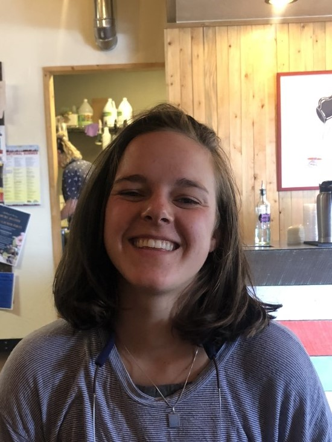
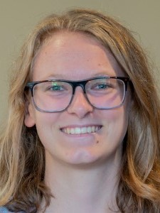
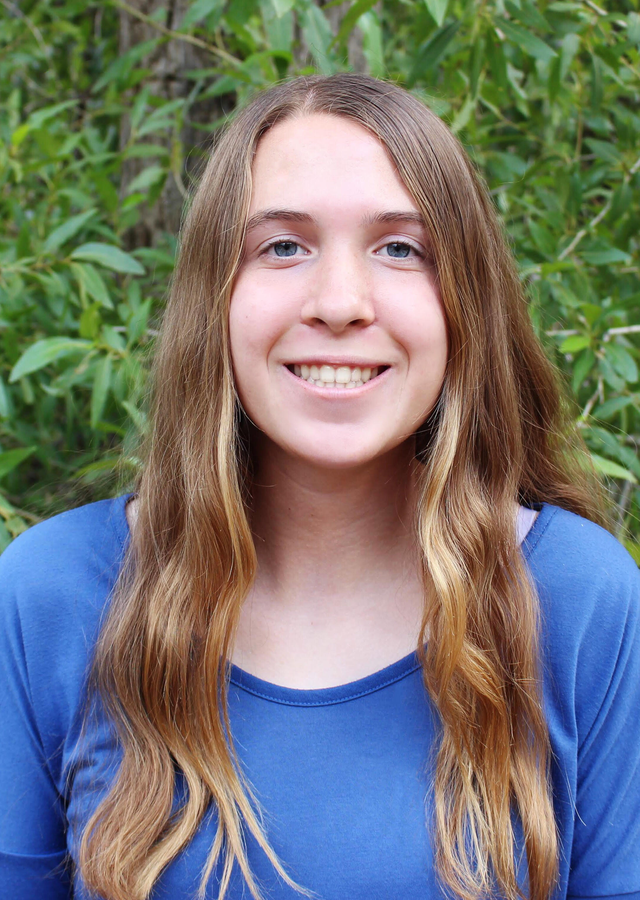
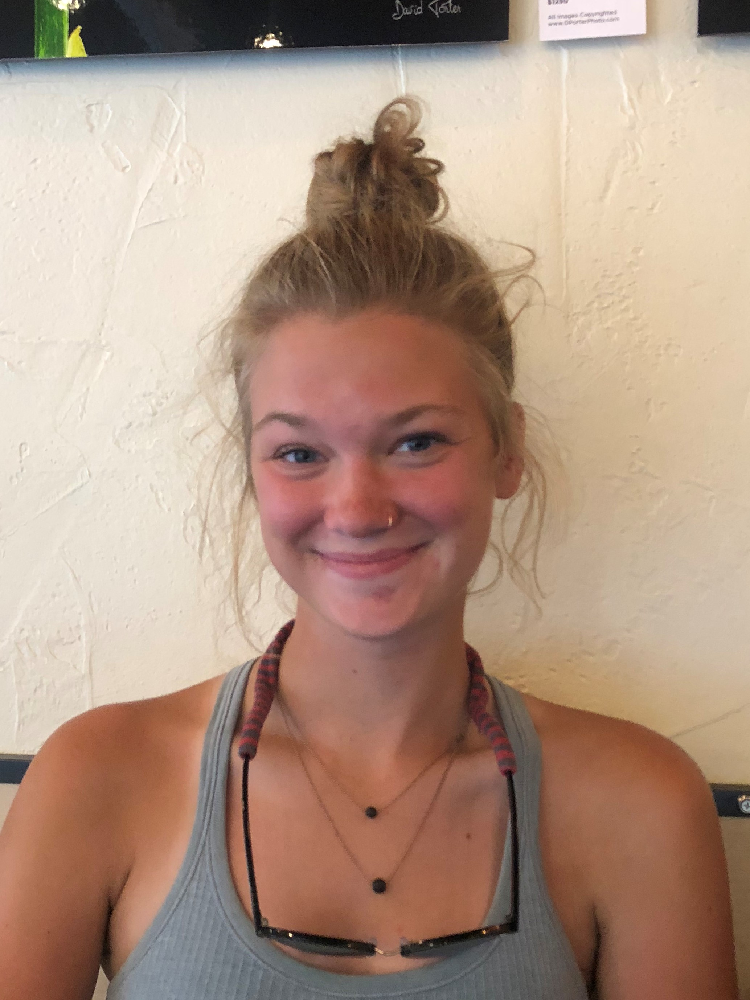

DISCOVER TECH
For 3rd - 6th Grade Girls
This program meets four times per semester on School of Mines campus. It introduces girls to a variety of STEM subjects through fun, hands-on activities. **Due to COVID-19 our fall 2020 program will be virtual. See details below.

- Time: 4:30-5:45
- Day: Offered Monday - Thursday (choose ONE day of the week, as listed below)
- Location: Virtual session via Zoom
- Cost: $40
2020 Fall Session days/dates
- 3rd/4th Grade (choose ONE session):
- MONDAY: September 21, October 5, October 26, November 9
- TUESDAY: September 22, October 6, October 27, November 10
- WEDNESDAY: September 23, October 7, October 28, November 11
- THURSDAY: September 24, October 8, October 29, November 12
- 5th/6th Grade (choose ONE session):
- MONDAY: September 28, October 12, November 2, November 16
- TUESDAY: September 29, October 13, November 3, November 17
- WEDNESDAY: September 30, October 14, November 4, November 18
- THURSDAY: October 1, October 15, November 5, November 19
Our DISCOVER Tech Instructors
 Amanda is a junior studying Chemical/Biochemical Engineering and minoring in Biomedical Engineering and Materials & Metallurgical Engineering. Her passion for chemistry began in 2nd grade and continues to grow every day! She hopes to inspire the same love of learning that has motivated her by presenting STEM topics in a fun and engaging way. In her free time, Amanda enjoys reading, dancing, hiking, and anything else that gives her a deeper appreciation of the world.
Amanda is a junior studying Chemical/Biochemical Engineering and minoring in Biomedical Engineering and Materials & Metallurgical Engineering. Her passion for chemistry began in 2nd grade and continues to grow every day! She hopes to inspire the same love of learning that has motivated her by presenting STEM topics in a fun and engaging way. In her free time, Amanda enjoys reading, dancing, hiking, and anything else that gives her a deeper appreciation of the world.
Ellie is a senior in geological engineering from Raymond, Maine. This is her third year working with DECtech and she is super excited to meet this year's group of girls. In her free time she loves being in the mountains and finding new rocks for her collection.
Gillian is a junior in Electrical Engineering with a minor is Computer Science from Los Gatos, California. She has years of experience teaching and tutoring students in a variety of subjects. The subjects of Electrical Engineering she is interested in are embedded systems and control design. In her spare time, she is either reading or working out with the school’s club triathlon team.
 Megan is a graduate student studying Mechanical Engineering and Robotics. This is her 4th year working with Discover Tech and her 3rd as an instructor. She loves working with all the girls here at DECtech and she hopes to see them all in the STEM field someday!
Megan is a graduate student studying Mechanical Engineering and Robotics. This is her 4th year working with Discover Tech and her 3rd as an instructor. She loves working with all the girls here at DECtech and she hopes to see them all in the STEM field someday!
 Samyuktha is a Senior at Mines studying Computer Science with a focus is Robotics & Intelligent Systems. She has worked for DECTech since her first semester at Mines and is excited to be an instructor again! She looks forward to working with all the amazing girls that come through the program, ready to inspire them to pursue a STEM education.
Samyuktha is a Senior at Mines studying Computer Science with a focus is Robotics & Intelligent Systems. She has worked for DECTech since her first semester at Mines and is excited to be an instructor again! She looks forward to working with all the amazing girls that come through the program, ready to inspire them to pursue a STEM education.
 Laura is a sophomore at Mines studying Computer Science. She started working with DECtech her sophomore year and loves to share her enthusiasm for STEM with young girls. In her free time she enjoys hiking, climbing, and being outdoors.
 Katelyn is a junior studying Computer Science with a focus in Data Science. This is her 3rd year working for DECtech and her first year as an instructor. She hopes to inspire girls and help them see all of the opportunities available in STEM!
Katelyn is a junior studying Computer Science with a focus in Data Science. This is her 3rd year working for DECtech and her first year as an instructor. She hopes to inspire girls and help them see all of the opportunities available in STEM!
Lucy is a junior in Computer Science and Engineering Physics. This is her third year working with Dectech. She loves this job because it allows for her to share her passion for STEM with young girls and inspire them to change the future! Outside of school and work, she loves hiking, climbing, and kayaking.
For a printable flyer (pdf) about the current session of DISCOVER TECH, please click here.
Have questions? Please visit our FAQ page and find answers to popular questions.
Need more information? Please email us at stem-tech@mines.edu
Financial scholarships available thanks to our sponsors